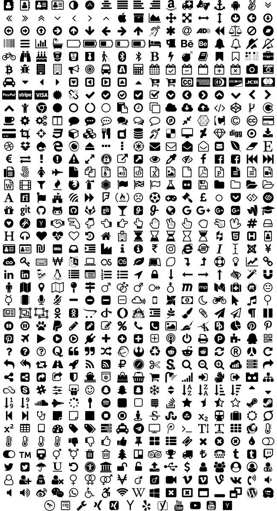

jIconFont
jIconFont is a API to provide icons generated from any IconFont. These icons can be used in Java GUI toolkits, such as Swing and JavaFX.
IconFonts are versatile and light-weight.
Any icon size.

Any icon color.

Choose the appropriate API for the Java GUI toolkit used by you
Choose any IconFont you wish
Icons
Font Awesome

Google Material Design Icons

Open Iconic

LICENSE
jIconFont is distributed under the terms of the MIT license. See LICENSE file for details.